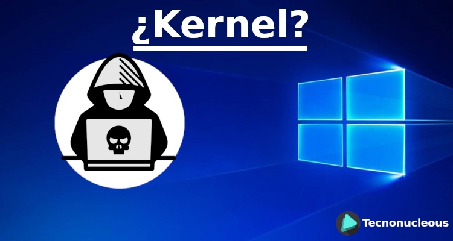

El grupo Kernel Web nace después de que nuestra integrante Lisbeth ingresara con ese nombre a una clase, después de varios llamados y advertencias se identificó, dando con eso el nombre emblemático a nuestro grupo.
KERNEL: El kernel es definido como el núcleo o corazón del sistema operativo, y se encarga principalmente de mediar entre los procesos de usuario y el hardware disponible en la máquina, es decir, concede el acceso al hardware, al software que lo solicite, de una manera segura; y el procesamiento paralelo de varias tareas.
